SPRING BOOT 프로젝트 소개 (팀프로젝트)
[기본정보]
■ 프로젝트 명 : Spring Boot로 구현한 부산 맛집 리뷰사이트 -「BMJ WHERE」
■ 기획의도
: 기존에 존재하는 맛집 사이트들은 부산사람들만이 아는 생생한 정보를 충분히 담아내지 못한다는 점에 착안해, 어떻게하면 부산만의 지역 맛집 정보를 쉽게 공유하고 현지화된 서비스를 제공할 수 있을까 하는 고민 끝에 기획하였습니다. SpringBoot를 사용하여 부산 로컬 맛집 정보를 카테고리별로 세분화하여 제공하고, 또 ‘맛집 조회’ 화면에서 리뷰 남기기와 평점 매기기 기능을 통해 인기도를 한 눈에 파악하는 사이트를 만들어보고 싶었습니다. 또한 멤버십 할인 등과 같이 여러 부가서비스들을 제공하는 기능도 구현해보고 싶었습니다.
■ 팀구성원은 총 4명이며, 저는 전반적인 백엔드 기능 구현 및 DB 설계를 담당하였습니다.
■ 개발기한은 2021.10.12~2021.10.22로, 10일간 매우 촉박하게 진행되어 많은 곤경에 부딪혔지만 상당부분 극복하고 완성했습니다.
■ 기술 스택
1. Spring Boot(framework) : 스프링을 이용하면 보안관련(Spring Security), 데이터베이스 연결(JDBC, JPA Hibernate), 디버그 테스트(junit), Thymeleaf, HikariPool 등 수많은 기술을 지원합니다. Spring Boot의 경우 많은 것이 자동화로 처리되어 xml파일없이 쉽게 @(annotation) 하나로 관리가 가능하며, 스프링을 더 쉽게 다룰 수 있게 해주기 때문에 선택하였습니다.
2. Gradle build : Maven에서 사용하는 pom.xml보다 훨씬 편하고 가독성이 더 좋아 선택했습니다.
3. JPA, Hibernate : Mybatis와 같은 xml mapper를 이용한 데이터베이스 보조도구와 달리 JPA의 경우 자바 ORM 구조를 따라 클래스 형태로 추상화시키면 되기 때문에, 개발 코드가 보다 단순화된다는 점 때문에 선택했습니다.
4. Thymeleaf : JSP 대신 Thymeleaf를 사용하여 화면처리를 하면 Model에 담긴 객체를 화면에서 JavaScript로 처리하기 편리하고, .html파일로 생성하는 데 문제가 없어 편리하기에 선택했습니다.
5. 그외 MariaDB(DB), Intellij(IDE), Tomcat 9.0(server), Java 11(jre)을 사용하여 개발했습니다.

■ 프로젝트 명 : Spring Boot로 구현한 부산 맛집 리뷰사이트 -「BMJ WHERE」
■ 기획의도
: 기존에 존재하는 맛집 사이트들은 부산사람들만이 아는 생생한 정보를 충분히 담아내지 못한다는 점에 착안해, 어떻게하면 부산만의 지역 맛집 정보를 쉽게 공유하고 현지화된 서비스를 제공할 수 있을까 하는 고민 끝에 기획하였습니다. SpringBoot를 사용하여 부산 로컬 맛집 정보를 카테고리별로 세분화하여 제공하고, 또 ‘맛집 조회’ 화면에서 리뷰 남기기와 평점 매기기 기능을 통해 인기도를 한 눈에 파악하는 사이트를 만들어보고 싶었습니다. 또한 멤버십 할인 등과 같이 여러 부가서비스들을 제공하는 기능도 구현해보고 싶었습니다.
■ 팀구성원은 총 4명이며, 저는 전반적인 백엔드 기능 구현 및 DB 설계를 담당하였습니다.
■ 개발기한은 2021.10.12~2021.10.22로, 10일간 매우 촉박하게 진행되어 많은 곤경에 부딪혔지만 상당부분 극복하고 완성했습니다.
■ 기술 스택
1. Spring Boot(framework) : 스프링을 이용하면 보안관련(Spring Security), 데이터베이스 연결(JDBC, JPA Hibernate), 디버그 테스트(junit), Thymeleaf, HikariPool 등 수많은 기술을 지원합니다. Spring Boot의 경우 많은 것이 자동화로 처리되어 xml파일없이 쉽게 @(annotation) 하나로 관리가 가능하며, 스프링을 더 쉽게 다룰 수 있게 해주기 때문에 선택하였습니다.
2. Gradle build : Maven에서 사용하는 pom.xml보다 훨씬 편하고 가독성이 더 좋아 선택했습니다.
3. JPA, Hibernate : Mybatis와 같은 xml mapper를 이용한 데이터베이스 보조도구와 달리 JPA의 경우 자바 ORM 구조를 따라 클래스 형태로 추상화시키면 되기 때문에, 개발 코드가 보다 단순화된다는 점 때문에 선택했습니다.
4. Thymeleaf : JSP 대신 Thymeleaf를 사용하여 화면처리를 하면 Model에 담긴 객체를 화면에서 JavaScript로 처리하기 편리하고, .html파일로 생성하는 데 문제가 없어 편리하기에 선택했습니다.
5. 그외 MariaDB(DB), Intellij(IDE), Tomcat 9.0(server), Java 11(jre)을 사용하여 개발했습니다.
1) 먼저, 구현된 기능들을 소개드립니다.(개발 일지는 하단에 기재)
[검색 및 시큐리티(회원가입 및 로그인) 기능 구현]
■ 메인페이지에서 리스트 페이지로 검색 기능 연동
■ 맛집 리스트 페이지 검색 기능 구현
■ 시큐리티(회원가입 및 로그인, 로그아웃) 기능 구현
■ 내비게이션의 'EAT딜' 메뉴에서 로그인 유저 권한 설정 구현
[카테고리 페이지, 상세정보 조회 페이지 및 회원 별점 리뷰 기능 구현]
■ 세분화된 카테고리 (한식, 일식, 중식, 양식, 카페) 별 데이터 목록 필터링 기능 구현
■ 카테고리 페이지에서 데이터 항목별 상세정보 조회 페이지로 접속
■ 상세정보 조회 페이지의 기능들 : 사용자 CRUD 구현
---(1) DB에서 데이터 불러오기
---(2) DB의 주소값과 Kakao맵 API를 연동하여 지도 표현
---(3) 리뷰 등록과 리뷰 불러오기
---(4) 리뷰 별점 계산
---(5) 리뷰 수정 및 삭제
[관리자 접속 시 데이터관리 기능 구현]
■ 관리자 권한 설정 구현
■ 관리자 CRUD 구현
---(1) (관리자) 맛집 정보를 DB에 등록하는 페이지 구현
---(2) (관리자) 맛집 수정과 삭제 기능
2) 다음으로, Spring을 사용한 개발 과정 및 저의 개발일지를 소개드립니다.(구현된 기능으로 이동)
1. [패턴 구조 : 다음 구조를 가지고 작업을 처리했습니다.] [▲목차]
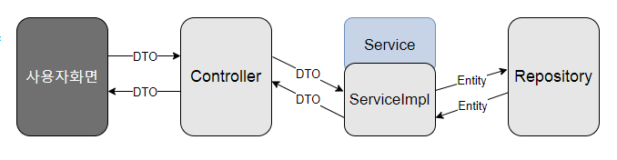
스프링부트에서 처리되는 작업은 사용자화면에서의 요청이 Controller로 이동하고, 이때의 데이터값은 DTO형식으로서 Controller에서 Serive계층으로 이동하며, 이것을 Service계층에서 Entity객체로 변환하여 Repository로 넘어가 데이터를 처리하고, 그 결과값을 역순으로 보냅니다. 저는 이러한 패턴을 숙지하고 Controller계층과 Service계층, Repository계층을 나누고 Entity와 DTO를 정의하여 개발에 임하였습니다.
2. [데이터 관계도] [▲목차]
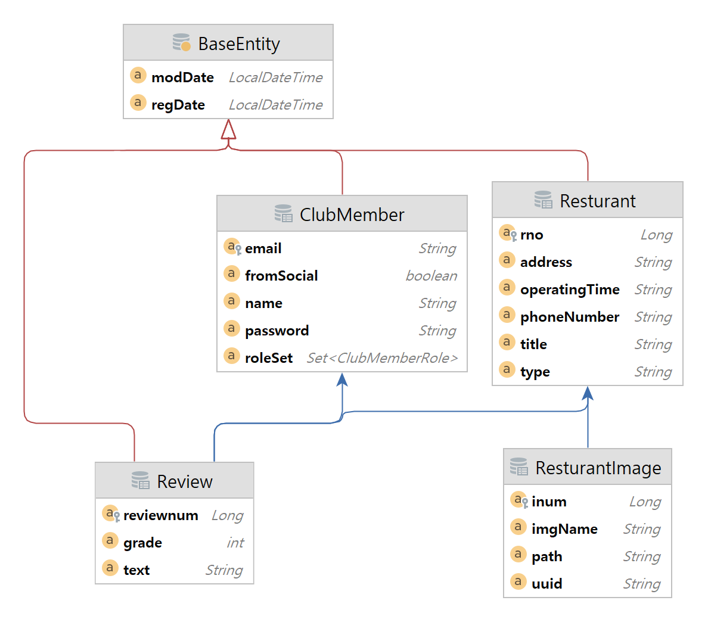
[ 부가설명 ]
- BaseEntity는 시간 관련된 엔티티로, 이것을 상속하면 등록과 수성시간을 처리할 수 있어, 데이터값 등록과 직접적으로 관련된 모든 엔티티가 상속하고 있습니다.
- 리뷰 엔티티는 멤버와 식당엔티티에서 FK를 가져옵니다.
- 식당 이미지는 다수의 이미지가 하나의 식당에 소속되어야 하므로 식당엔티티에서 FK를 가져옵니다.
3. [기능별 개발 과정] [▲목차]
3.1. 식당 데이터 CRUD처리
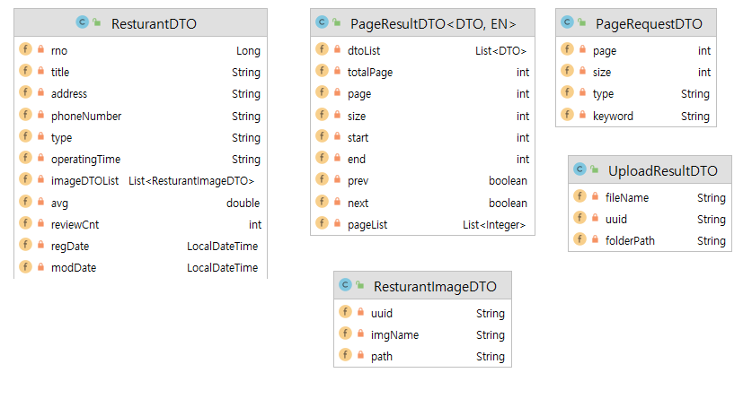
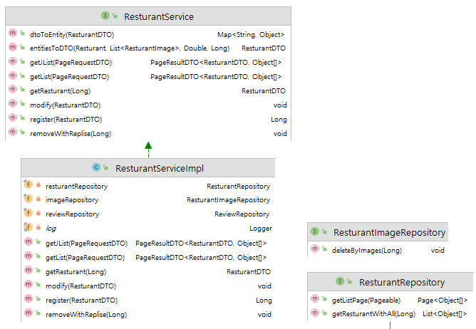
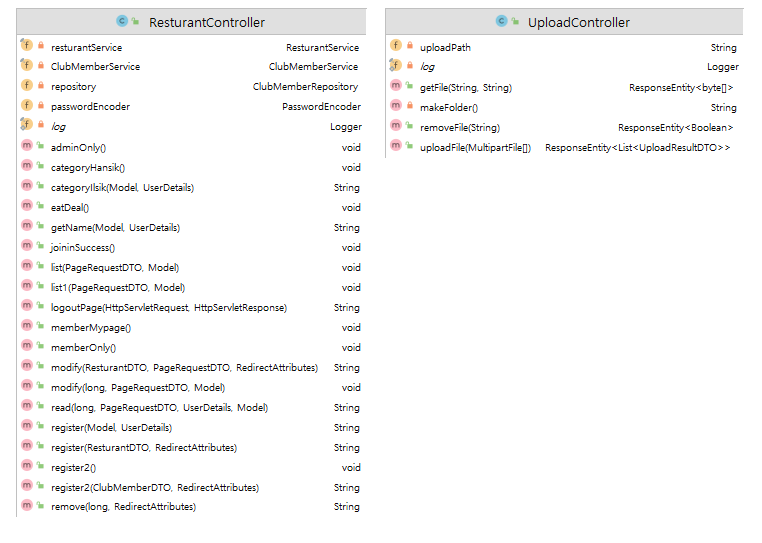
3.1.1. 리스트 목록 처리
: 페이징 처리를 위한 PageRequestDTO와 화면에 필요한 데이터값들을 List타입으로 보관하는 PageResultDTO를 만들고, RestaurantRepository에서 페이징 처리를 위한 쿼리문 작성
3.1.2. 데이터 조회 처리
: 컨트롤러에서 ResturantDTO를 변수값으로 할당하고 뷰페이지에서 데이터조회 코드 작성시 활용
: 뷰페이지의 변수값 활용은 Thymeleaf문법을 따르고 있으며 'th:value' 값으로 지정됨.
3.1.3. 데이터 등록, 수정, 삭제
: Service계층에서 식당정보 추가 메서드 register 작성. 해당 메서드는 DTO타입을 파라미터로 전달받고 생성된 게시물의 번호를 반환하도록 작성됨.
: Service계층에서 삭제메서드(removeWithReplies), 수정 메서드(modify) 작성. 이때 삭제는 식당에 소속된 리뷰도 함께 삭제함.
: 뷰페이지(register.html) 코드에서 form과 input 태그로 데이터값을 입력받을 수 있음.
3.1.4. 이미지 업로드
: 데이터 관련해서, 식당 테이블이 PK를 가지고 식당이미지 테이블은 FK를 가지도록 ResturantImage 엔티티에 @ManyToOne 어노테이션으로 설정
: 파일 업로드와 관련된 모든 작업은 Ajax로 처리하고 결과는 Json 형태로 제공
: 서블릿의 자체적인 파일업로드 라이브러리 이용했고, UploadController에서 @PostMapping("/uploadAjax")어노테이션이 부과된 List형식의 이미지업로드 메서드(uploadFile) 정의.
: uploadFile메서드 안에서 이미지를 썸네일로 저장하는 기능 구현.
3.2. 리뷰 기능
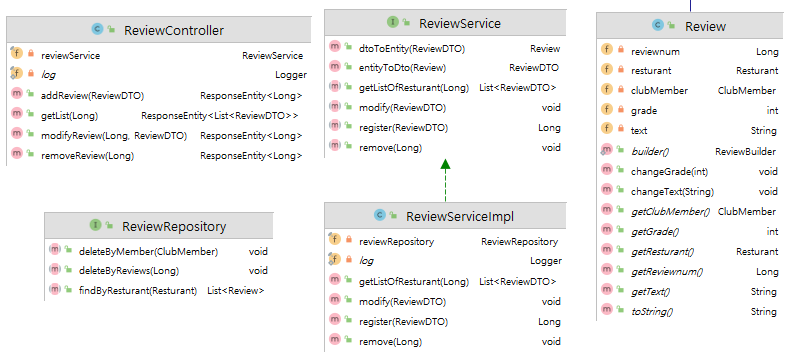
3.2.1. 회원 테이블과 식당 테이블 간 다대다 관계 구현
: 회원과 식당 테이블 사이에 두 개의 테이블을 연결(매핑)해주는 '리뷰 테이블'이 존재하도록 review엔티티에서 다음과 같이 구현
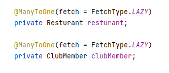
3.2.2. JSON 포맷으로 데이터를 교환하며, Ajax로 리뷰값을 가져오는 리뷰형식의 댓글 처리
: ReviewController에서 어노테이션 @PutMapping과 @DeleteMapping 및 JSON으로 들어오는 데이터를 자동으로 해당타입의 객체로 매핑하는 @RequestBody 활용
: 뷰페이지(read.html) 스크립트 코드에서, Ajax로 전송, 삭제, 수정하는 코드 작성 (해당 코드는 전송 기능 중 일부 발췌)
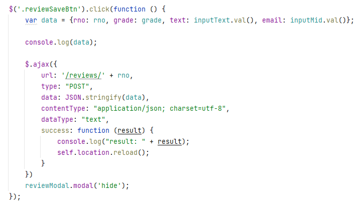
: 뷰페이지(read.html)에서 제이쿼리의 each 반복문 활용하여 리뷰목록을 호출하는 getJSON메서드 작성
3.2.3. 리뷰 관련된 기능은 기본적으로 버튼 클릭 시 이벤트리스너로 처리된 모달창 활용
3.2.4. 평점 구현하기 : 평점은 Restuarant의 avg 필드에 저장되며, 평균은 RestaurantRepository에서 JPQL문 안에 구현
3.3. 회원 기능 : 스프링 시큐리티 이용
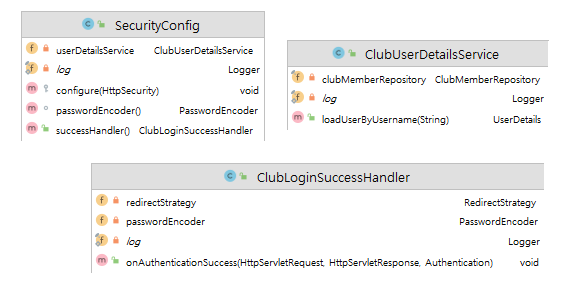
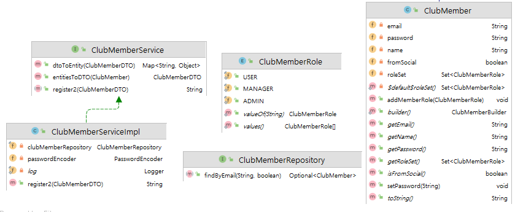
3.3.1. 개요 : JPA와 연동한 일반적인 ID/PW 기반의 커스텀 로그인 구현
3.3.2. config에서 모든 시큐리티 관련 설정이 추가됨
: http.authorizeRequests()를 통해 인증이 필요한 뷰페이지 설정
: PasswordEncoder를 통해 암호회된 비밀번호값 전송
: loginPage() 활용해 사이트의 고유한 로그인 페이지로 이동
: ClubLoginSuccessHandler와 ClubUserDetailsService를 import해 가져옴
3.3.3. Controller에서 @PreAuthorize("hasRole('권한')") 어노테이션 활용해 매핑 시 인증되지 않은 사용자에게 인증 요청
3.3.4. ClubAuthMemberDTO에서는 내장된 User클래스를 상속해 사용자 생성자를 호출하고, 소셜 로그인을 구현하기 위해 OAuth2User를 implements하였으나, 10일이라는 프로젝트 기간의 촉박함으로 소셜로그인 기능을 완수하지 못함.
3.3.5. 마감기간을 앞두고, 미처 구현하지 못한 ClubAuthMemberDTO의 기능적 측면(소셜로그인 연동 가능)을 그대로 살려두면서 일시적으로 새로운 멤버 데이터를 이용하기 위해, 새롭게 ClubMember 엔티티와 DTO생성하고, 관리자와 사용자의 권한을 나누기 위한 Role 엔티티도 정의.
3.3.6. ClubUserDetailsService에서, ClubAuthMember의 DTO값에 새로 만든 clubMember의 DTO값을 주입하고 최종적으로 ClubAuthMember를 리턴.
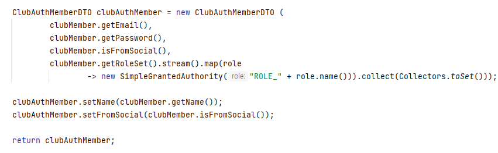
3.3.7. 뷰페이지들에서는 〈sec:authorize〉 태그를 활용해, 권한에 따라 다른 화면이 보이게끔 구현함. 유저 정보를 뷰페이지에서 활용하기 위해 〈sec:authentication="name"〉 태그 활용으로 부족한 부분에서는 컨트롤러에서 메서드 지정.
3.3.8. 식당정보 조회화면(read.html)에서 리뷰모달창 안에 로그인한 사용자 정보를 불러오기 위해 다음 메서드 지정. [이와 관련되어 발생하는 문제점은 하단 개선사항에 기재하였습니다]
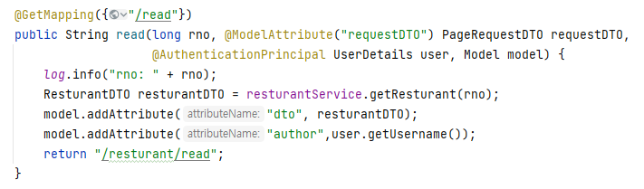
3.4. 검색 기능
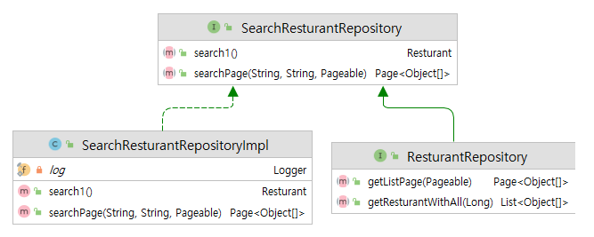
3.4.1. 개요 : 동적쿼리 처리를 위해 Querydsl 이용하여 엔티티를 Q도메인으로 변환하여 처리함
3.4.2. SearchResturantRepository와 SearchResturantRepositoryImpl를 생성하여, 검색과 관련된 메서드를 만들고, BooleanBuilder를 생성하여 검색 조건을 설정함
4. [개선사항 및 새롭게 학습한 것] [▲목차]